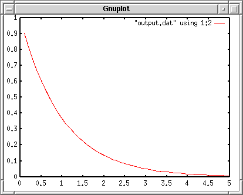
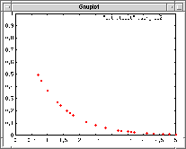
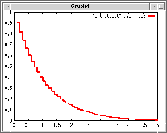
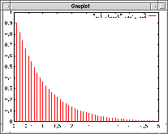
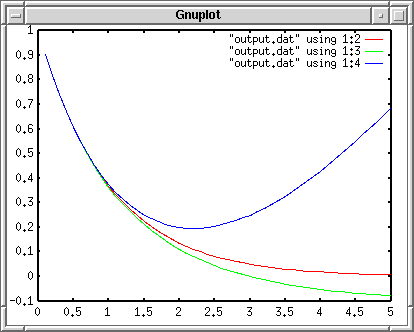
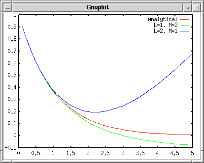
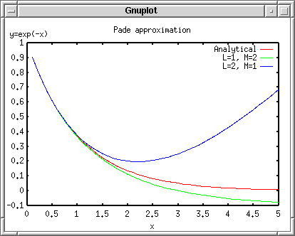
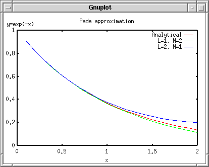
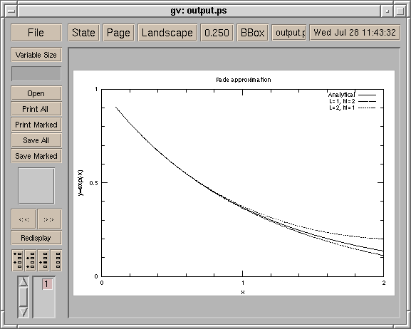
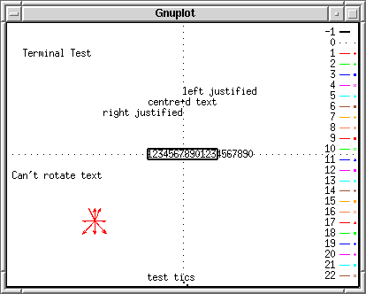

<!DOCTYPE HTML PUBLIC "-//W3C//DTD HTML 4.01 Transitional//EN">
<html lang="ja">
<head>
<title> gnuplot / intro / plotcalc </title>
<!-- Generated 1999/ 7/28 -->
<!-- $Id: plotcalc.html,v 1.11 2004/12/17 07:34:07 kawano Exp $ -->
<meta http-equiv="content-type" content="text/html;charset=iso-2022-jp">
<link rel="stylesheet" href="../style-new.css" type="text/css">
</head>
<body>

<table width="100%" border="0" cellpadding="0" cellspacing="0">
<tr><td bgcolor="#cccc90" width="320">
    <div align="left">
    <a href="../index.html">
    
    </a></div></td>
    <td bgcolor="#cccc90">
      <div align="center"><h3> - not so Frequently Asked Questions - </h3> </div>
      <div class="update"> update 2004/8/31 </div>
    </td>
</tr>
<tr><td bgcolor="#fae8ba"></td>
    <td bgcolor="#fae8ba"><div class="navi"> 
<a href="../index.html">          HOME </a> |
                                  INTRODUCTION |
<a href="../general.html">        INFORMATION </a> |
<a href="../gallery/index.html">  GALLERY </a> |
<a href="plotcalc-e.html">        ENGLISH </a>
</div></td></tr>
</table>
<hr class="topsep">


<table width="100%" border="0" cellpadding="0" cellspacing="0">
<tr><td id="menu">
 <p> <a href="index.html">   gnuplot$BF~Lg(B  </a></p>
  <ul>
   <li> <a href="basic.html">   $B4pK\$N4pK\JT(B  </a>
   <li> <a href="plotcalc.html">$B?tCM7W;;JT(B </a>
     <ul>
       <li> <a href="plotcalc.html#data">     $B%G!<%?$N=`Hw(B </a>
       <li> <a href="plotcalc.html#oneline">  (X,Y)$B$NAH(B </a>
       <li> <a href="plotcalc.html#multiline">$BJ#?t$N@~(B </a>
       <li> <a href="plotcalc.html#label">    $B%?%$%H%k$H<4L>(B </a>
       <li> <a href="plotcalc.html#range">    XY$B$NHO0O(B </a>
       <li> <a href="plotcalc.html#tics">     $BL\@9(B </a>
       <li> <a href="plotcalc.html#done">     $B40@.(B </a>
     </ul>
   <li> <a href="plotexp.html"> $B<B83%G!<%?JT(B </a>
   <li> <a href="plotfunc.html">$B4X?tI=<(JT(B </a>
   <li> <a href="working.html"> $B@83hJT(B </a>
   <li> <a href="style.html">   $B%9%?%$%k0lMw(B </a>
 </ul>
</td>

<td id="content">


<h1><a name="top"> gnuplot $BF~Lg(B --- $B?tCM7W;;JT(B </a></h1>


<h2><a name="data">$B$^$:$O%G!<%?%U%!%$%k$N=`Hw(B </a></h2>

<p> $B7W;;7k2L$r%W%m%C%H$9$k$?$a$K$O!$7k2L$r%U%!%$%k$KMn$7$F$*$/I,MW$,(B
$B$"$j$^$9!%%U%!%$%k$ODL>o$N%F%-%9%H%U%!%$%k$K$7$F$*$-$^$9!%<!$N$h$&$J(B
$B%W%m%0%i%`$r:n$j!$$=$N7k2L$r%W%m%C%H$7$F$_$^$7$g$&!%$3$l$O!$(By=exp(-x)$B$N(B
Pade$B6a;w$r7W;;$9$k$b$N$G$9!%(B</p>

<pre class="file">
#include &lt;stdio.h&gt;
#include &lt;math.h&gt;

int main(void);
int main(void)
{
 int i;
 double x,y,z1,z2,d;

 d = 0.1;
 x = 0.0;
 for(i=0;i&lt;50;i++){
   x += d;
   y  = exp(-x);
   z1 = (6 - 2*x)/(6 + 4*x + x*x);
   z2 = (6 - 4*x + x*x)/(6 + 2*x);
   printf("% 6.2f % 11.4e % 11.4e % 11.4e\n",
             x,y,z1,z2);
 }
 return 0;
}
</pre>


<pre class="file">
      INTEGER I 
      REAL*8  X,Y,Z1,Z2,D
      D = 0.1
      X = 0.0
      DO 10 I=1,50
          X = X+D;
          Y  = EXP(-X)
          Z1 = (6 - 2*X)/(6 + 4*X + X*X)
          Z2 = (6 - 4*X + X*X)/(6 + 2*X)
          WRITE(6,20) X,Y,Z1,Z2
   10 CONTINUE
   20 FORMAT(F6.2,3(1X,1PE11.4))
      STOP
      END
</pre>


<p>$B$3$N%W%m%0%i%`$N=PNO$N:G=i$H:G8e$NItJ,$O!$<!$N$h$&$K$J$j$^$9!%:8C<(B
$B$N%+%i%`$,(BX$B:BI8!$(B2$BHVL\$N%+%i%`$,(BEXP(-X)$B$NCM!$<!$N(B2$B$D$N%+%i%`$,(BPade$B6a;w(B
$B$K$h$kCM$rI=$7$F$$$^$9!%(BX$B$N>.$5$$=j$G6a;w$ONI$/!$(BX$B$,Bg$-$/$J$k$H@:EY$,(B
$B0-$/$J$C$F$$$k$N$,$o$+$k$H;W$$$^$9!%(B</p>

<pre class="file">
  0.10  9.0484E-01  9.0484E-01  9.0484E-01
  0.20  8.1873E-01  8.1871E-01  8.1875E-01
  0.30  7.4082E-01  7.4074E-01  7.4091E-01
  0.40  6.7032E-01  6.7010E-01  6.7059E-01
  0.50  6.0653E-01  6.0606E-01  6.0714E-01
                    ....
  4.60  1.0052E-02 -7.0237E-02  5.7632E-01
  4.70  9.0953E-03 -7.2510E-02  6.0325E-01
  4.80  8.2297E-03 -7.4627E-02  6.3077E-01
  4.90  7.4466E-03 -7.6597E-02  6.5886E-01
  5.00  6.7379E-03 -7.8431E-02  6.8750E-01
</pre>


<div class="top"><a href="plotcalc.html#top"></a></div>
<h2><a name="oneline">(X,Y)$B$NAH$r%W%m%C%H(B</a></h2>

<p> $B$3$N%G!<%?$r%W%m%C%H$7$^$7$g$&!%7W;;7k2L$N=PNO$r%U%!%$%k$K=q$-=P$7(B
$B$^$9!%$3$N%U%!%$%kL>$r(Boutput.dat$B$H$7$F$*$-$^$9!%%W%m%C%H$9$k%G!<%?$O!$(B
X$B:BI8(B1$B$D$KBP$7$F(B3$B%+%i%`$"$j$^$9!%$^$:$O!$(B2$B%+%i%`L\(B(EXP(-X)$B$NCM(B)$B$r%W%m%C(B
$B%H$7$^$7$g$&!%(B</p>

<pre class="sample">
gnuplot&gt; plot "output.dat" using 1:2 with lines
</pre>

<div align="center"></div>

<p> $B>e$N?^$O!$@bL@$r$7$d$9$$MM$K%&%#%s%I%&$r>/$7>.$5$/$7$F$$$^$9!%(B</p>
<p> $B%W%m%C%H$9$k%+%i%`$O(B using $B$G;XDj$7$^$9!%(Busing X:Y $B$NMM$K%3%m%s$N(B
$B:8$,(BX$B:BI8$N%+%i%`!$1&$,(BY$B:BI8$N%+%i%`$K$J$j$^$9!%(Bwith $B$N8e$K!$%W%m%C%H(B
$B$N%9%?%$%k$r;XDj$7$^$9!%(Blines$B$J$i!$7W;;E@$N4V$rD>@~$G7k$S$^$9!%%W%m%C(B
$B%H$9$k$H$-$N@~$N<oN`$,4v$D$+$"$j!$(B1$B$+$i=gHV$KHV9f$,M?$($i$l$F$$$^$9!%(B
with lines$B$N8e$K$=$NHV9f$rM?$($k$3$H$b$G$-$^$9!%2?$b$7$J$1$l$P!$(B
gnuplot$B$OF1;~$K%W%m%C%H$9$k@~$,A}$($k$?$S$K(B1$BHV$N@~$+$i=gHV$K;H$C$F$$$-(B
$B$^$9!%(B</p>

<p>$B%W%m%C%H$N%9%?%$%k$K$O!$E@$rBG$D!$5-9f$rIA$/!$@~$G7k$V!$3,CJ>u$N@~(B
$B$G7k$V!$K@%0%i%U$rIA$/!$Ey$,$"$j$^$9!%<g$J%9%?%$%k$r0J2<$K5s$2$^$9!%(B</p>

<div align="center"><table>
<tr><td align="center"> with points </td>
    <td></td></tr>
<tr><td align="center"> with steps </td>
    <td></td></tr>
<tr><td align="center"> with impulses </td>
    <td></td></tr>
</table></div>


<div class="top"><a href="plotcalc.html#top"></a></div>
<h2><a name="multiline">$BF1;~$KJ#?t$N@~$r0z$/(B</a></h2>

<p> $B<!$K!$;D$j$N(B2$B$D$N%+%i%`$rF1;~$K%W%m%C%H$7$F$_$^$9!%J#?t$N@~$rF1;~(B
$B$KIA$/$K$O(Bplot$B$KB3$1$F!$IA$/$b$N$r=g$K;XDj$7$F$$$-$^$9!%(Bgnuplot$B$O!$A4(B
$BIt$N%G!<%?$,2hLL$K<}$^$k$h$&$K<4$NCM$rE,Ev$K%9%1!<%k$7!$<+F0E*$K@~<o$r(B
$BJQ$($J$,$i%W%m%C%H$7$^$9!%(B"output.dat" using X:Y with lines $B$r$/$j$+$((B
$B$9$o$1$G$9$+$i!$F~NO9T$,D9$/$J$C$F$7$^$$$^$9!%$=$N>l9g$O!$(B\($B!o5-9f!$$b(B
$B$7$/$O%P%C%/%9%i%C%7%e(B)$B$r9TKv$K$$$l$k$H!$<!$N9T$b7QB39T$H$_$J$5$l$^$9!%(B</p>

<pre class="sample">
gnuplot&gt; plot "output.dat" using 1:2 with lines, \
&gt; "output.dat" using 1:3 with lines,\
&gt; "output.dat" using 1:4 with lines
</pre>

<div align="center"></div>

<p> 2$BHVL\$NNP?'$N@~$GIA$+$l$F$$$k?tCM$,(BX$B$NBg$-$J=j$GIi$K$J$k$N$G!$(BY$B<4$N(B
$B:G>.CM$O<+F0E*$K(B-0.1$B$^$G1d$S$F$$$^$9!%(B</p>

<p> $B?^$NK^Nc$K$O!$%W%m%C%H$7$?%G!<%?%U%!%$%kL>$H;H$C$?%+%i%`$,I=<($5$l$F(B
$B$$$^$9!%$3$3$rJQ$($F$_$^$7$g$&!%$^$:0lHV>e$N@V$$@~$O2r@O4X?t$NCM$J$N$G!$(B
"Analytical"$B$H=q$-$^$9!%<!$NNP$N@~$O(BPade$B6a;w$N(BL=1,M=2$B$r;H$C$?$b$N$J$N$G!$(B
"L=1, M=2" $B$H$$$&I=Bj$rIU$1$^$7$g$&!%:G8e$N(B
$B@D$$@~$O!$F1$8$/(BL=2, M=2$B$N(BPade$B6a;w$J$N$G!$$3$l$rI=Bj$K$7$^$7$g$&!%(B
$BK^Nc$NCf?H$rJQ$($k$K$O!$%W%m%C%H$9$k$H$-$K(Btitle$B$rIU$1$^$9!%(B</p>

<pre class="sample">
gnuplot&gt; plot "output.dat" using 1:2 title "Analytical" with lines, \
&gt; "output.dat" using 1:3 title "L=1, M=2" with lines,\
&gt; "output.dat" using 1:4 title "L=2, M=1" with lines
</pre>

<div align="center"></div>


<div class="top"><a href="plotcalc.html#top"></a></div>
<h2><a name="label">$B%0%i%U$N%?%$%H%k$H<4L>$rF~$l$k(B </a></h2>

<p> $B<!$K(BX$B$H(BY$B<4$NL>A0$rF~$l$^$9!%(BX$B<4$K$O(B "x"$B$r=q$-!$(BY$B<4$K$O(B"y=exp(-x)"
$B$r$D$1$^$7$g$&!%<4$N@_Dj$K$O!$(B<tt>set xlabel</tt>$B$H(B<tt>set ylabel</tt>$B$r;H$$$^$9!%$^$?!$(B
<tt>set title</tt>$B$r;H$$!$?^A4BN$NI=Bj$H$7$F(B"Pade approximation"$B$H$$$&$N$r$$$l(B
$B$^$7$g$&!%(B<tt>replot</tt>$B$r;H$&$H!$%W%m%C%H$7$?$b$N$HF1$8$b$N$r$b$&0lEY%W%m%C%H(B
$B$7D>$7$^$9$N$G!$@hDx$ND9$$%3%^%s%I$r$b$&0lEYF~NO$9$kI,MW$O$"$j$^$;$s!%(B</p>

<pre class="sample">
gnuplot&gt; set xlabel "x"
gnuplot&gt; set ylabel "y=exp(-x)"
gnuplot&gt; set title "Pade approximation"
gnuplot&gt; replot
</pre>

<div align="center"></div>

<p> $B?^$NBg$-$5$,>/$7JQ$o$C$?$N$,J,$+$j$^$9$+!%(Bgnuplot$B$OA4BN$,OHFb(B($B:#$N(B
$B>l9g$G$O%&%#%s%I%&(B)$B$K<}$^$kMM$K!$A4BN$r<+F0E*$KD4@0$7$^$9!%<4L>$dI=Bj(B
$B$J$I$,F~$k$H!$$=$NJ,?^<+BN$O>.$5$/$J$j$^$9!%(B</p>

<p> Y$B<4L>$N(B"y=exp(-x)"$B$O!$(BY$B<4$N2#$KF~$i$:>e$K=q$+$l$F$$$^$9!%$3$l$O(BX$B%&%#(B
 $B%s%I%&$G?^$r%W%m%C%H$9$k$H$-$KJ8;z$r2sE>$G$-$J$$$?$a$G$9!%J8;z$r2#$K$G(B
 $B$-$k$b$N(B(PostScript$BEy(B)$B$K=PNO$9$l$P!$(BY$B<4L>$O@5$7$$0LCV$KI=<($5$l$^$9!%$J(B
 $B$*!$;H$C$F$$$k(Bgnuplot$B$,(Bver.3.8$B$h$j?7$7$$$b$N$J$i!$2hLL>e$G$b2sE>$5$l$F(B
 $B$$$k$O$:$G$9!%(B</p>


<div class="top"><a href="plotcalc.html#top"></a></div>
<h2><a name="range">XY$B$NHO0O$rJQ99$9$k(B</a></h2>

<p> $B:#EY$O!$(BX$B<4$H(BY$B<4$NHO0O$rJQ99$7$^$9!%(BY$B<4$NHO0O$O(B-0.1$B$+$i(B1$B$K$J$C$F$$$^$9!%(B
$B$3$NIi$NItJ,$r@Z$jMn$H$7$F$7$^$$!$(BY$B$NHO0O$r(B[0,1]$B$K$7$^$7$g$&!%(BX$B$NHO0O$O(B
[0,5]$B$G$9$,!$$3$l$r(B[0,2]$B$K$7$^$7$g$&!%I=<(HO0O$r;XDj$9$k$K$O!$(Bset {x|y}range
$B$r;H$$$^$9!%(B</p>

<pre class="sample">
gnuplot&gt; set xrange [0:2]
gnuplot&gt; set yrange [0:1]
gnuplot&gt; replot
</pre>

<div align="center"></div>


<div class="top"><a href="plotcalc.html#top"></a></div>
<h2><a name="tics">$B<4$KL\@9$r$$$l$k(B </a></h2>


<p> X$B<4$NL\@9$O(B0$B$+$i;O$^$C$F(B0.5$B9o$_$GA}$($F$$$^$9!%$3$l$r(B1$B9o$_$K$7!$$=$N(B
$B4V3V$K(B0.2$B$E$D>.$5$JL\@9$r$D$1$^$7$g$&!%$^$?!$(BY$B<4$N$[$&$O!$(B0.5$B9o$_$K$7!$(B
$B$=$N4V$r(B5$BEyJ,$7$^$7$g$&!%(B</p>

<p> $BL\@9$O(B<tt> set {x|y}tics </tt>$B$GJQ$($^$9!%(B<tt> set xtics 1 </tt>$B$N$h$&(B
$B$K?t;z$r0l$D$@$1M?$($k$H!$$=$N?t;z$N4V3V$GL\@9$,IU$-!$$=$3$K?t;z$,=q$+$l$^$9!%(B
<tt> set xtics 0,0.1 </tt>$B$NMM$K(B2$B$DM?$($k$H:G=i$N?t;z$,=i4|CM!$(B
2$BHVL\$,A}J,$K$J$j$^$9!%M?$($??t;z$,(B3$B$D$J$i!$(B3$BHVL\$,:G=*CM$K$J$j$^$9!%(B</p>

<p> $B>.$5$$L\@9$O!$(Bset m{x|y}tics $B$G!$Bg$-$$L\@9$r2?J,3d$9$k$+$rM?$($^(B
$B$9!%$3$3$G$NNc$J$i(B5$BJ,3d$G$9!%>.L\@9$N=j$K$O?t;z$O=q$+$l$^$;$s!%(B</p>

<pre class="sample">
gnuplot&gt; set xtics 1
gnuplot&gt; set mxtics 5
gnuplot&gt; set ytics 0.5
gnuplot&gt; set mytics 5
gnuplot&gt; replot
</pre>


<div class="top"><a href="plotcalc.html#top"></a></div>
<h2><a name="done">$B40@.(B</a></h2>

<p> $B$3$l$G40@.$G$9!%7k2L$r(BPostScript$B$K$7$F!$0u:~$7$F$_$^$7$g$&!%(B
$B$^$:!$=PNO%I%i%$%P$r(Bpostscript$B$K$7$^$9!%<!$K7k2L$r=PNO$9$k%U%!%$%kL>$r(B
set output $B$GM?$(!$(Breplot$B$7$^$9!%$3$N$^$^(Bgnuplot$B$r=*$C$F$7$^$&$H!$(B
$B$$$^$^$G$N:n6H$,L5$/$J$C$F$7$^$$$^$9!%(Bsave$B$r;H$C$FE,Ev$J%U%!%$%k(B($B$3$3$G$O(B
<a href="output.plt"> output.plt </a> $B$H$$$&L>A0(B)$B$KJ]B8$9$k$H!$$3$3$^$G$N(B
$B:n6HFbMF$,%U%!%$%k$K;D$j$^$9!%(B</p>

<pre class="sample">
gnuplot&gt; set term postscript
gnuplot&gt; set output "output.ps"
gnuplot&gt; replot
gnuplot&gt; save "output.plt"
gnuplot&gt; quit
</pre>

<p> $B=PMh>e$,$C$?(Boutput.ps$B$r(BPostScript$B%W%j%s%?$KAw$l$P!$0u:~$G$-$^$9!%(B
$B$^$?(Bghostview$B$d(Bgv$B$r;H$($P!$FbMF$r%W%l%S%e!<$G$-$^$9!%2<$N%$%a!<%8$O!$(B
gv$B$G(Boutput.ps$B$r2hLL$KI=<($7$?$b$N$G$9!%(B</p>

<div align="center"></div>

<p> $B=L>.$7$F$$$k$N$G8+$($K$/$$$H$O;W$$$^$9$,!$%&%#%s%I%&$G$O@V$$@~$@$C(B
$B$?$b$N$O<B@~!$NP$H@D$,D9$5$N0c$&GK@~$KJQ$o$C$F$$$^$9!%$3$NMM$K(Bgnuplot
$B$G$O!$=PNO%I%i%$%P$K$h$C$F!$@~$d5-9f$N<oN`$,JQ$o$j$^$9!%$I$NHV9f$,$I$N(B
$B<oN`$KBP1~$7$F$$$k$N$+$O!$(Btest $B$H$7$F$_$k$HJ,$+$j$^$9!%Nc$($P(BX$B%&%#%s%I%&(B
$B$G$O!$<!$N$h$&$K$J$j$^$9!%(B</p>

<pre class="sample">
gnuplot&gt; set term x11
gnuplot&gt; test
</pre>

<div align="center"></div>

<div class="top"><a href="plotcalc.html#top"></a></div>
</td></tr></table>
<hr class="topsep">

</body>
</html>

